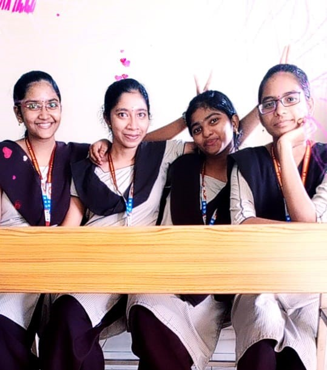

#First year :-

That day we have completed our 1st-year Btech and at that time we are feeling like seniors. We are out of the world and flying in the happiness of our world. We 4 members are very lucky to have each other as friends. We will stand for each other in any moments that we face in life. We don't know the word "me" we know only "we". At that moment I have decided not to leave them in my life. That day we are little bit tensed also because we brought mobiles without permission that is the 1st adventure we have done. We are the craziest batch but no one notices it because of our acting skills. I hope we will spend so many beautiful moments like this..........